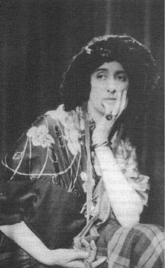

5. Bölüm
On dokuzuncu yüzyılın ilk günü sadece Londra’nın değil, Britanya Adaları’nın tamamının tepesinde asılı duran büyük bulut olduğu yerde kaldı, daha doğrusu durmadı, çünkü uğuldayan fırtına bulutu sürekli sağa sola savururken o bulutun gölgesinde kalanları garip bir şekilde etkiliyordu. İngiltere’nin iklimi değişmiş görünüyordu. Sık sık ama kesintilerle yağmur yağıyor, başlamasıyla bitmesi bir oluyordu. Güneş çıkıyordu tabii, ama bulutlarla öyle kuşatılıyor, hava da öyle nem yüklü oluyordu ki, güneşin ışınlarının rengi atıyor, donuk morlar, turuncular ve kırmızılar, on sekizinci yüzyılın daha kesin hatlı manzaralarının yerini alıyordu. Bu zedelenmiş ve kasvetli kubbenin altında kabakların yeşili soluyor, karların beyazı kirleniyordu. Daha da kötüsü nemin, bütün düşmanların en sinsisi olan nemin her eve sızmasıydı, çünkü perde güneşi engelleyebilirdi, ateş yakılıp soğuktan korunulabilirdi ama nem biz uyurken gizlice girerdi içeri; nem sessizdir, fark edilmez, yayılır. Nem tahtayı şişirir, çaydanlığı küflendirir, demiri paslandırır, taşı çürütür. Bu süreç öyle ağır işler ki, bir çekmeceyi açana ya da kömür kovasını elimize alana ve tuttuğumuz şey dağılıp dökülene kadar bir illetle karşı karşıya olduğumuzu fark etmeyiz.
Böylece, sinsice ve sezdirmeden, kesin günü ya da saatine dair iz bırakmadan, İngiltere’nin yapısı değişti ve bunu bilen olmadı. Etkisi her yerde hissedildi. Belki de Adam kardeşler tarafından klasik bir zarafetle tasarlanmış bir salonda, eskiden memnuniyetle biralı ve biftekli bir yemeğe oturmuş olan gözü pek taşra beyefendisi şimdi orada ürperiyordu. Halılar çıkarıldı ortaya; sakallar uzatıldı; pantolonlar ayak bileklerinde sıkılaştırıldı. Taşra beyefendisinin bacaklarında hissettiği soğuk çok geçmeden evine geçti; mobilyalar sarılıp sarmalandı; duvarlar ve masalar örtüldü; açıkta hiçbir şey kalmadı. Sonra beslenmede değişiklik yapılması gerekti. Küçük ekmekler ve yassı kadayıf icat edildi. Akşam yemeğinden sonra içilen tatlı şarabın yerini kahve aldı; kahve, içileceği bir oturma odasını; oturma odası camlı vitrinleri; camlı vitrinler yapma çiçekleri; yapma çiçekler şömine raflarını; şömine rafları kuyruklu piyanoları; kuyruklu piyanolar oturma odasında söylenen baladları; oturma odasında söylenen baladlar (bir-iki aşamayı geçelim) sayısız küçük köpeği, kilimi ve porselenleri gerektirdiğinden ev –ki son derece büyük bir önem kazanmıştı– baştan aşağı değişti.
Evin dışını –nemin başka bir etkisiydi– görülmemiş sıklıkta sarmaşıklar sarmıştı. Eskiden baştan aşağı taş olan binalar yeşilliklere bürünmüştü. Özgün hali ne kadar düzenli olursa olsun her bahçede çalılar, yabanotları, dolambaçlar bulunuyordu. Çocukların doğduğu yatak odalarına ışık sızsa da doğallıkla ancak koyu bir yeşil oluyordu rengi, yetişkin erkeklerin ve kadınların yaşadığı oturma odalarına girebilen ışıksa kahverengi ve mor kadife perdelerden nüfuz ediyordu. Ancak bu değişiklik sadece dışarıdaki şeylerle sınırlı kalmadı. Nem, her şeyin içine sızdı. İnsanlar soğuğu kalplerinde hissettiler; nemi zihinlerinde. Duygularını az da olsa sıcak bir yere sokabilmek için umarsızca çabalayarak durmadan bahaneler buldular. Aşk, doğum ve ölüm, çeşit çeşit güzel cümlelere sarmalandılar. Kadınla erkek birbirinden gitgide uzaklaştı. Açıkça yürütülen sohbetler hoş görülmedi. Her iki taraf da azimle kaçamaklara, gizliliklere başvurdu. Dışarıdaki nemli toprakta sarmaşığın ve otların azgınca büyümesi gibi aynı biteklik kendini içerde de gösterdi. Ortalama kadının hayatı doğumlar silsilesinden ibaret oldu. On dokuzunda evleniyor ve otuzuna geldiğinde on beş ya da on sekiz çocuk doğurmuş oluyordu; çünkü ikizlerin sayısı az değildi. Britanya İmparatorluğu böyle oluştu; ve böylece –çünkü nemin önü alınamaz; tahtaya işlediği gibi mürekkep hokkasına da girer– cümleler şişti, sıfatlar çoğaldı, şiirler destan oldu, bir sütun uzunluğundaki küçük deneme yazıları on ya da yirmi ciltlik ansiklopedilere dönüştüler. Ama Eusebius Chubb, bütün bunları durdurma olanağı bulamayan duyarlı bir adamın zihninin nasıl etkilendiğinin tanığı olacak. Anılarının sonuna doğru bir paragraf var, orada bütün bir sabah “boş şeyler hakkında her şeyi” yazıp otuz beş sayfa doldurduktan sonra mürekkep hokkasının kapağını nasıl kapattığını ve bahçede dolaşmaya çıktığını anlatıyor. Çok geçmeden otların arasında bulmuş kendini. Başının üstünde sayısız yaprak çıtırdıyor ve parıldıyormuş. “Ayaklarının altında daha binlercesini eziyormuş gibi” görüyormuş kendini. Bahçenin dibindeki nemli bir şenlik ateşinden yoğun bir duman yükseliyormuş. Dünyada hiçbir ateşin etrafı sarmış o devasa bitkileri yakıp bitiremeyeceğini düşünmüş. Baktığı her yer bitkilerin saldırısına uğramış. Salatalıklar “çimenlerin üzerinden döne döne ayaklarına kadar geliyorlarmış.” Dev karnabaharlar kat kat yükseliyor, Eusebius Chubb’un dengesini yitirmiş imgeleminde, neredeyse karaağaçlarla boy ölçüşüyorlarmış. Tavuklar durmadan rengi belirsiz yumurtalar yumurtluyorlarmış. Sonra, iç geçirerek kendi doğurtkanlığını ve şimdi içeride on beşinci doğumuyla cebelleşen zavallı karısı Jane’i hatırlayınca, kümes hayvanlarını nasıl suçlayabilirim diye düşünmüş. Başını kaldırıp göğe bakmış. Bizzat cennet, ya da cennetin o geniş cephesi, yani gökyüzü, bir ilahi gücün onayını, teşvikini göstermiyor muymuş? Çünkü, yaz olsun kış olsun, her yıl, orada bulutlar balinalar gibi, ya da filler gibi yuvarlanıp dönüyor diye düşünmüş; ama hayır, göklerdeki binlerce dönümlük araziden üstüne yağan mecazlardan kaçmak mümkün değildi; Britanya Adaları’nın üstünde yayılan bütün o gökyüzü bizzat geniş bir kuştüyü yataktı; ve bahçenin, yatak odasının ve tavuk kümesinin birbirinden ayırt edilemeyen doğurtkanlığı orada da mevcuttu. İçeri girdi, yukarıdaki paragrafı yazdı, başını bir havagazı fırınına soktu, daha sonra onu bulduklarında yapılacak bir şey kalmamıştı.
İngiltere’nin her tarafında bunlar olurken Blackfriars’daki evine çekilip hiçbir şey değişmemiş gibi, sanki insan her istediğini hâlâ söyleyebilirmiş, canı istediğinde kısa pantolon ya da etek giyebilirmiş gibi davranmak Orlando’nun işine geldi. Ama sonunda o da, devrin değiştiğini kabul etmek zorunda kaldı. Yüzyılın başlarında bir gün öğleden sonra ahşap kaplamalı eski arabasıyla St. James Parkı’ndan geçerken, sık sık olmasa da ara sıra yeryüzüne düşmeyi başaran şu güneş ışınlarından biri zor zahmet bulutların içinden geçti, geçerken de onları çeşit çeşit tuhaf renklerle hareledi. On sekizinci yüzyılın berrak ve bulutsuz göklerinden sonra bu manzara Orlando’nun camı indirip dışarı bakmasına neden olacak kadar tuhaftı. Koyu mor ve pembe-beyaz bulutlar tatlı bir ıstırapla, ona İyonya denizlerinde ölen yunusları düşündürdü, ki bu da Orlando’nun fark etmeksizin çoktan nemden etkilendiğini kanıtlıyor. Ama onu asıl şaşırtan, yeryüzüne düşünce güneş ışınının bir piramiti, kıyım alanını ya da ganimeti ortaya çıkarması ya da aydınlatmasıydı (çünkü ziyafet sofrasını andırır bir yanı vardı) – her halü kârda, şimdi Kraliçe Victoria’nın heykelinin bulunduğu yerde, büyük bir kütle halinde bir araya gelmiş karmakarışık, üstü üste yığılmış en aykırı ve uyumsuz nesneler ortaya çıkıyordu. Köşeleri oymalı ve çiçek motifli büyük bir altın haçın etrafına dul giysileri ve gelin duvakları dolanmıştı; başka çıkıntılara da kristal saraylar, çocuk arabaları, miğferler, çelenkler, pantolonlar, bıyıklar, düğün pastaları, top arabaları, Noel ağaçları, teleskoplar, ölmüş canavarlar, küreler, haritalar, filler ve matematiksel aletler takılmıştı; bütün bunları sağ tarafta, devasa bir arma gibi duran, tiril tiril beyaz bir giysi içindeki bir kadın figürü destekliyordu; sol tarafta da, frak ceketi ve bol pantolon giymiş iri yarı bir beyefendi. Bu nesnelerin uyumsuzluğu, baştan aşağı giyimli kişilerle kısmen örtülü kişilerin bir araya gelmesi, değişik renklerin göz alıcılığı ve çaprazlama dizilmeleri Orlando’yu büyük bir dehşete düşürdü. Hayatı boyunca aynı anda hem bu kadar çirkin, bu kadar iğrenç, hem de bu kadar görkemli bir şey görmemişti. Bunun nedeni, güneşin suya doymuş havanın üzerindeki etkisi olabilirdi, evet, öyle olmalıydı; ilk esintide kaybolacaktı; buna rağmen, Orlando yanından geçerken, sonsuza kadar dayanacakmış gibi görünüyordu. Arabada oturduğu köşeye gömülürken, hiçbir şeyin, ne rüzgârın, ne de yağmur, güneş, ya da gök gürültüsünün o cafcaflı yapıyı ortadan kaldıramayacağını hissetti. Sadece burunlar lekelenecek ve borazanlar paslanacaktı; ama yerlerinde kalacak, doğuyu, batıyı, güneyi ve kuzeyi göstereceklerdi, sonsuza kadar. Arabası Constitution Tepesi’ne çıkarken Orlando dönüp arkasına baktı. Evet, oradaydı, elbette –cebinden saatini çıkardı– öğlen on ikinin ışığında sakince parlıyordu. Başka hiçbir şey bu kadar bayağı, bu kadar sıradan olamazdı, güneşin doğuşuna ya da batışına bu kadar kayıtsız kalamazdı, sonsuza kadar yerinde kalacak şekilde hesaplanmış gibi görünemezdi. Bir daha bakmamaya kararlıydı. Kanının damarlarında yavaşlayarak akmaya başladığını hissediyordu. Ama daha da ilginci, Buckingham Sarayı’nın önünden geçerken yanaklarını alev alev, garip bir kızarıklık kapladı, sanki üstün bir güç, dizlerine bakmaya zorluyordu onu. Birden, siyah bir pantolon giymiş olduğunu görüp irkildi. Şehir dışındaki evine varana kadar yanaklarındaki kızarıklık geçmedi, dört atın otuz millik bir yolu ne kadar zamanda aldıkları düşünülürse, umarız ki onun iffetinin sağlam bir işareti sayılır bu.
Eve varınca, doğasının en baskın ihtiyacı haline gelmiş olan şeye uydu ve yatağından çekip aldığı bir damasko örtüye iyice sarındı. Dul Bartholomew’e (yaşlı Grimsditch’in yerine kâhya o olmuştu) üşüdüğünü söyledi.
“Hepimiz üşüyoruz, hanımefendi,” dedi dul Bartholomew, derinden iç geçirerek. “Duvarlar terliyor,” dedi Orlando, tuhaf, hüzünlü bir hoşnutluk duyarak, elini duvarın meşe kaplamasına koyar koymaz parmaklarının izi kalıyordu orada. Sarmaşıklar iyice büyüyüp sıklaşmış, pencerelerin çoğunu artık iyice kaplamıştı. Mutfak öyle karanlıktı ki çaydanlıkla süzgeci birbirinden ayırt edemiyorlardı. Zavallı bir kara kediyi kömür sanmışlar ve kürekle ateşe atmışlardı. Hizmetçilerin çoğu artık üç-dört tane kırmızı yünlü iç etek giymeye başlamışlardı, oysa aylardan ağustostu.
“Doğru mu hanımım,” diye sordu kâhya kadın, kollarıyla bedenini sarınca göğsündeki altın haç kalkıp indi, “Kraliçemizin, Tanrı onu korusun, ne diyorsunuz adına, hani şu giydiği–” kadıncağız tereddüt etti, kızardı.
“Çemberli iç etek,” diye yardım etti Orlando ona (çünkü bu söylenti Blackfriars’a kadar ulaşmıştı). Mrs. Bartholomew başıyla doğruladı. Yanaklarından gözyaşları süzülmeye başlamıştı, ama ağlarken bir yandan da gülümsüyordu. Çünkü ağlamak güzeldi. Hepsi de çaresiz kadınlar değiller miydi, gerçeği gizleyebilmek için çemberli iç etek giyenler; büyük gerçeği; tek gerçeği; ama, yine de acıklı olan gerçeği; artık yadsımak mümkün olmayana kadar her edepli kadının yadsımak için elinden geleni yaptığı gerçeği; bir çocuk doğurmak üzere olduğu gerçeğini? Aslında on beş-yirmi çocuk doğurma gerçeğini, ne de olsa edepli bir kadının hayatının büyük kısmı, en azından yılın bir gününde apaçık meydanda olanı yadsımakla geçiyordu.
“Çöreğler ısıccacık,” dedi Mrs. Bartholomew, gözyaşlarını kurularken, “kütüpanedeler.”
Orlando da damasko örtüye sarınmış durumda çörekleri yemek üzere oturdu.
“Çöreğler ısıccacık, kütüpanedeler.” Orlando çayını içerken – bu tatlı sıvıdan nefret ederdi– Mrs. Bartholomew’in özentili Cockney aksanıyla söylediği berbat cümleyi taklit etti. Kraliçe Elizabeth’in bu odada, elinde bir maşrapa birayla şöminenin yanında durduğunu hatırladı, Lord Burghley düşüncesizlik edip dilek kipi yerine emir kipi kullanınca Kraliçe maşrapasını sertçe masaya indirmişti. Kraliçe’nin “Küçük adam, küçük adam” dediğini duyar gibiydi, “prenslerle konuşurken ‘mecbursun’ denir mi?” ve maşrapa masaya inmişti: izi hâlâ oradaydı.
Kraliçe’yi düşünmek bile Orlando’nun yerinden fırlamasına yetmişti, ama ayağı yatak örtüsüne takıldı, bir küfür savurarak gerisin geriye, kalktığı koltuğa düştü. Ertesi gün, eteklik dikilsin diye yirmi metre kadar siyah ince kumaş almalıydı. Sonra da (bu noktada yüzü kızardı) bir de çemberli iç etek alacaktı, ondan sonra (yüzü yine kızardı) bir de beşik, sonra bir çemberli iç etek daha, falan filan... Bu yüz kızarmaları, alçakgönüllülük ve mahcubiyetin kendisini en incelikli biçimde yinelemesiyle gelip gitti. Çağın ruhunun Orlando’nun yanaklarında kâh sıcak, kâh soğuk estiği görülebiliyordu. Çağın ruhu biraz dengesiz estiyse, kocadan önce çemberli iç etek yüzünden yüzü kızardıysa, belirsiz konumu (onun cinsiyeti bile hâlâ tartışma konusuydu) ve daha önce sürdürdüğü düzensiz hayat onu mazur göstermeli.
Sonunda yanaklarının rengi normale döndü, ve çağın ruhu –eğer gerçekten öyle bir şey idiyse– bir süreliğine hareketsiz kalır gibi göründü. Sonra Orlando bir madalyon ya da eski bir aşkın hatırasını arar gibi gömleğinin göğsünü yokladı, ama öyle bir şey yerine bir tomar kâğıt bulup çıkardı, deniz lekesi, kan lekesi, seyahat lekesi vardı üzerinde – “Meşe Ağacı” adlı şiirinin elyazmasıydı. Bu elyazmasını o kadar yıldır ve öyle tehlikeli koşullarda yanında taşımıştı ki sayfaların çoğu lekelenmiş, kimileri yırtılmıştı; Çingenelerin yanındayken yazacak kâğıt konusunda çektiği sıkıntılar sayfaların kenarlarını da doldurmaya, satırlardan taşmaya zorlamıştı onu, sonunda elyazması, son derece özenle tamamlanmış bir yamaya benzedi. Orlando ilk sayfaya döndü ve 1586 tarihini okudu, erkek çocuklarınkine benzeyen kendi elyazısıyla yazılmıştı. Neredeyse üç yüz yıldır çalışıyordu onun üzerinde. Bitirmenin zamanı gelmişti. Okurken bir yandan da sayfaları çeviriyor, kalemini mürekkebe daldırıyor ve okuyor ve atlıyor ve bunca yıldır ne kadar az değiştiğini düşünüyordu. Bütün erkek çocuklar gibi ölüme sevdalı, karamsar bir çocuktu; sonra çapkın ve süslü-püslü olmuştu; arkasından şen şakrak ve alaycı; bazen düzyazı denemişti bazen de dram; bütün bu değişimler boyunca temelde aynı kişi olarak kaldığını düşündü. Aynı düşünceli, dalgın kişilik, aynı hayvan ve doğa sevgisi, kırlara ve mevsimlere duyulan aynı tutku.
“Ne de olsa,” diye düşündü, ayağa kalkıp pencereye giderken, “hiçbir şey değişmedi. Ev, bahçe eskiden oldukları gibi. Bir tek koltuk bile yerinden oynamadı, bir tek biblo bile satılmadı. Aynı yollar, aynı çimenler, aynı ağaçlar, aynı havuz, hatta içinde aynı sazanların olduğunu söyleyebilirim. Doğru, tahtta oturan Kraliçe Elizabeth değil de Kraliçe Victoria, ama ne fark eder...”
Düşüncesi şekillenir şekillenmez, onu haksız çıkarmak istercesine kapı ardına kadar açıldı ve çay servisini toplamak üzere içeri baş kâhya Basket girdi, arkasından da kâhya kadın Bartholomew. Kalemini mürekkebe yeni batırmış ve her şeyin ölümsüz olduğuna dair düşüncelerini kâğıda geçirmek üzere olan Orlando, damlayıp kaleminin çevresinde biriken bir mürekkep lekesinin işine engel olmasına çok öfkelendi. Bunun, tüy kalemindeki bir kusurdan doğduğunu sandı; ya çatlamıştı ya da kirliydi. Yeniden mürekkebe batırdı. Mürekkep damlası büyüdü. Söylediğini yazmaya çabaladı; ama tek bir kelime gelmedi aklına. Sonra o damlaya kanatlar ve bıyıklar ekledi, sonunda damla yusyuvarlak kafalı bir canavara benzedi, yarasa ile kanguru arasında bir şeye. Ama Basket ve Bartholomew odadalarken şiir yazmak olanaksızdı. “Olanaksız” der demez kaleminin yağ gibi kayıp kıvrılıp bükülerek kâğıdın üzerinde ilerlemesi Orlando’yu şaşırtıp korkuttu. Kâğıtta son derece güzel bir italik yazıyla yazılmış, hayatında okuduğu en yavan şiir duruyordu:
Değersiz bir halkayım ben,
Hayatın yorgun zincirinde,
Kutsal sözler söyledim,
Ah, boşuna söyledin deme!
Ay ışığında yalnızken gözyaşları,
Gidene ve sevilene döktüğü
gözyaşları parlayan genç kız
Mırıldanacak mı–
diye durmaksızın yazdı, Basket ile Bartholomew de homurdanıp sızlanarak odada dolaştılar, ateşi körükleyip çörekleri kaldırdılar.
Kalemini tekrar mürekkebe batırıp devam etti:
O kadar değişmişti ki,
Gökyüzünü pembeye boyayan akşam bulutu gibi
Bir zamanlar yanaklarını örten
O yumuşak karanfil bulut solup gitmişti,
Bölünerek göz alıcı, parlak kırmızılarla,
mezar meşaleleriyle
Ama o anda, ani bir hareketle mürekkebi kâğıda döktü ve sonsuza kadar olmasını umarak yazıları insanların gözlerinden gizledi. Tir tir titriyordu, ateş basmıştı. Mürekkebin böyle istemsiz bir esinle çağlayanlar gibi akmasını hissetmekten daha itici bir şey olamazdı. Ne olmuştu ona? Nedeni nem miydi, Bartholomew miydi, Basket miydi, neydi? diye sordu kendine. Ama oda boştu. Kimse yanıtlamadı onu, tabii sarmaşıktaki yağmur damlalarının sesi yanıt sayılmazsa.
O arada, pencerede dururken, bütün bedenini olağanüstü bir karıncalanma ve titremenin sardığının farkına vardı, sanki bin tane telden oluşuyordu da tellerin üzerinde bir meltem ya da başıboş parmaklar gam denemeleri yapıyordu. Kâh ayak parmakları karıncalanıyordu, kâh kemik iliği. Kalça kemikleri tuhaf tuhaf ürperiyordu. Saçları diken diken oluyor gibiydi. Telgraf tellerinin yirmi yıl kadar sonra yapacakları gibi kollarından sanki ezgiler, tıngırtılar duyuluyordu. Ama bütün bu hareketlenme eninde sonunda ellerinde yoğunlaşır gibiydi; sonra bir elinde, sonra o elin bir parmağında, sonra büzülüyor, sol elinin yüzük parmağını çevreleyen titrek ve duyarlı bir yüzük oluyordu. Bu hareketliliğe neyin neden olduğunu anlamak için elini kaldırdığında hiçbir şey görmüyordu– Kraliçe Elizabeth’in verdiği o tek taş büyük zümrütten başka hiçbir şey. Yetmez mi bu, diye sordu. Taş çok temizdi. En azından on bin pound ederdi. Ne tuhaf ki titreme (unutmayın ki insan ruhunun en karanlık dışavurumlarından biriyle karşı karşıyayız) bize, hayır, yetmez der gibiydi; ve sonra, soru sorar gibi oldu, sanki bu boşluk, bu tuhaf dikkatsizlik ne anlama geliyor diyordu. Sonunda zavallı Orlando, nedenini hiç bilemeden sol elinin yüzük parmağından utanır oldu. O anda Bartholomew içeri girerek akşam yemeğinde giymesi için hangi elbisesini çıkarması gerektiğini sordu, Orlando da hemen Bartholomew’in sol eline baktı ve daha önce fark etmediği bir şeyi hemen gördü – kadının orta parmağında sapsarı bir halka vardı, oysa kendisininki boştu.
“Yüzüğüne bakayım, Bartholomew,” dedi almak için elini uzatarak.
Bunu duyan Bartholomew bir serseriden göğsüne darbe yemiş gibi oldu. Bir-iki adım geriledi, elini yumruk yaptı, ve aşırı soylu bir hareketle yana uzattı. “Olmaz,” dedi, kararlı ve onurlu bir tavırla, hanımefendi isterse yüzüğe bakabilirdi, ama alyansını çıkarması için ne başpiskopos, ne papa ne de tahtında oturan Kraliçe Victoria zorlayabilirdi kendisini. O yüzüğü Thomas’ı yirmi beş yıl altı ay üç hafta önce takmıştı; onunla uyumuştu; onunla çalışmıştı; onunla dua etmişti; ve onunla gömülmek istiyordu. Aslında fazlasıyla duygulanan kadının sesi çatallaşmıştı, Orlando’nun anlayabildiği kadarıyla, alyansındaki ışıltının ona meleklerin arasında bir yer sağlayacağını ve yüzüğü gözünün önünden bir saniye bile ayırsa o ışıltının sonsuza kadar kararacağını söylüyordu.
Pencerenin önünde dikilip güvercinlerin oyunlarını seyrederken, “Tanrı yardımcımız olsun,” dedi Orlando, “ne biçim bir dünyada yaşıyoruz! Hem de ne biçim bir dünyada!” Dünyanın karmaşıklığı onu şaşırtıyordu. Sanki bütün dünya altın halka takmış gibiydi. Akşam yemeğine gidiyordu. Her taraf nikâh yüzüğü dolu oluyordu. Kiliseye gidiyordu. Dört bir yanda nikâh yüzükleri oluyordu. Arabasıyla dolaşmaya çıkıyordu. Altın ya da tombak, ince, kalın, basit, pürüzsüz, bütün ellerdeki yüzükler donuk donuk parlıyordu. Kuyumcular yüzük doluydu, Orlando’nun hatırladığı gibi pırıltılı taklitler ya da gerçek elmaslar değil, taşsız basit halkalardı bunlar. Aynı zamanda kasabalıların yeni bir alışkanlık edindiklerinin farkına vardı. Eskiden delikanlılarla kızların bir akdiken çalılığının altında oynaştığı sık sık görülürdü. Orlando pek çok çifti kamçısının ucuyla dürtmüş, sonra gülüp yoluna devam etmişti. Şimdi bütün bunlar değişmişti. Çiftler yolun ortasında kol kola girip ağır adımlarla, ayaklarını sürüyerek yürüyorlardı. Kadın sağ elini erkeğin sol eline veriyor, erkek de onun parmaklarını sıkıca kavrıyordu. Çoğunlukla ancak atlar burunlarının dibine gelince yerlerinden kımıldıyorlar, kımıldasalar bile yolun kenarına tek bir vücut halinde çekiliyorlardı. Orlando insan cinsine dair yeni bir keşifte bulunulmuş olduğunu varsayabiliyordu ancak; bütün çiftler birbirlerine yapışmışlardı, ama keşfi kimin ve ne zaman yaptığını bilemiyordu. Doğanın işine benzemiyordu. Güvercinlere, tavşanlara, av köpeklerine baktı, en azından Elizabeth döneminden beri doğanın usullerini değiştirdiğine ya da onardığına dair bir iz göremedi. Görebildiği kadarıyla hayvanlar arasında kopmayacak türde bir birleşme yoktu. Kraliçe Victoria ya da Lord Melbourne yol açmış olabilir miydi bu değişikliğe? Evlilik denen büyük keşif onların sayesinde mi gelişmişti? Yine de Kraliçe’nin köpeklerden hoşlandığını duymuştu, Lord Melbourne da duyduğuna göre kadınlardan hoşlanıyordu. Tuhaftı – iğrençti; gerçekten de bedenlerin bu birbirlerinden ayrılmazlığında Orlando’nun edep ve hijyen algısına ters gelen bir şey vardı. Uzun uzadıya kafa yordu, ama yaralı parmağı o kadar sızlıyor, öyle huzursuz ediyordu ki, düşüncelerini bir türlü toparlayamıyordu. Hizmetçilerin kurduğu hayaller gibi gevşeyip göz süzüyordu düşünceleri. O çirkin halkalardan bir tane alıp herkes gibi parmağına takmaktan başka yapacak bir şey yoktu. Öyle de yaptı, bir perdenin loşluğuna sığınıp utanç içinde halkayı parmağına geçirdi; ama işe yaramadı. Sızlama eskisinden de ısrarla, şiddetle sürdü. O gece gözünü kırpmadı. Ertesi sabah, yazmak üzere kalemi eline aldığında ya aklına hiçbir şey gelmedi ve kalemin ucundan peş peşe iri gözyaşı damlaları döküldü ya da, erken ölüm ve çürümeye dair tatlı sözcüklerde dolaştı ki bu daha da korkutucuydu ve düşünmemekten daha kötüydü. Çünkü görünen o ki –Orlando’nun durumu bunu kanıtladı– parmaklarımızla değil bütün varlığımızla yazarız. Kalemi yöneten sinir, varlığımızın bütün liflerini sarar, kalbin içinden geçer, ciğeri deler. Orlando’nun sorununun merkezi sol eli gibi görünse de bedeninin her yerinin zehirlendiğini hissedebiliyordu, sonunda çarelerin en umarsızını düşünmeye mecbur kaldı, yani tamamıyla boyun eğerek çağın ruhuna teslim olmayı ve bir koca bulup evlenmeyi.
Bunun, onun mizacına uygun olmadığını yeterince açıkladık. Arşidük’ün arabasının tekerleklerinin sesi duyulmaz olduğunda onun dudaklarından yükselen çığlık “Hayat! Bir Âşık!” oldu. “Hayat! Bir Koca!” değil. Bu amacını gerçekleştirmek için şehre gitti ve bir önceki bölümde anlatıldığı gibi dünyayı dolaştı. Bununla birlikte çağın ruhunun dik başlı doğası öyledir ki kendisine direnenleri, kendine uyum sağlayanlardan çok daha şiddetle yıkıma sürükler. Orlando doğal olarak Elizabeth dönemi ruhuna yatkındı, Restorasyon ruhuna, on sekizinci yüzyıl ruhuna ve sonucunda bir çağın bitip ötekinin başladığının pek farkına varmamıştı. Ama on dokuzuncu yüzyıl ruhundan hiç hoşlanmıyordu, o ruh onu aldı, parçaladı ve Orlando onun karşısında görülmedik bir yenilgiye uğradığını anladı. Çünkü herhalde insan ruhunun zamanda kendisine ayrılan yeri vardır; kimileri bu çağda doğar, kimileri şunda; şimdi artık Orlando kadın olduğuna, otuzunu bir-iki yıl geçtiğine göre, kişiliğinin hatları kesinleşmişti ve onları ters yöne çevirmek dayanılır gibi değildi.
Böyle kederler içinde, giymeye razı olduğu çemberli iç eteğin ağırlığıyla yere doğru çekilerek oturma odasının penceresinde durdu (Bartholomew kütüphaneye bu adı takmıştı). O güne kadar giydiği bütün elbiselerden daha ağır ve daha sıkıcıydı bu iç etek. Ötekilerin hiçbiri hareketlerini böyle engellememişti. Artık köpekleriyle bahçede gezinemiyor ya da kolayca tepeye koşup kendini meşe ağacının altına atamıyordu. Eteklikleri nemli yaprakları ve çöpleri topluyordu. Tüylü şapkası bir esintide uçup gidiyordu. İncecik ayakkabıları hemen ıslanıyor, çamura bulanıyordu. Kasları esnekliğini yitirmişti. Ahşap kaplamanın arkasında haydutlar olur diye korkuyordu ve hayatında ilk kez koridordaki hayaletlerden ürküyordu. Bütün bunlar onu adım adım, Kraliçe Victoria’nın ya da her kimse onun bu yeni keşfine boyun eğmeye götürüyordu, yani her erkeğe ve her kadına, hayatı boyunca, ölüm onları ayırana dek, destek olacağı, destek bulacağı bir başka kişinin tahsis edilmiş olduğuna. Arkasına yaslanmanın, oturmanın, hatta yatmanın, bir daha asla, asla, asla ayağa kalkmamanın çok büyük bir rahatlık olacağını hissetti. Geçmişte ne kadar gururlu olursa olsun, çağın ruhunun onun üzerindeki etkisi böyleydi; duyguların skalasından aşağı kayarak alttaki bu basit mekâna gelirken, önceden kılı kırk yaran ve sorgulayıcı olan bu tınlamalar ve sızlamalar en tatlı ezgilere dönüştü, sonunda sanki melekler beyaz parmaklarıyla arpların tellerine dokunmuşlar gibi Orlando’nun bütün varlığını tatlı bir uyum kapladı.
Ama kime sırtını dayayabilirdi? Bu soruyu en sert sonbahar rüzgârlarına sordu. Çünkü ekim ayıydı ve her zamanki gibi yağmur yağıyordu. Arşidük olmazdı; çok önemli bir hanımefendiyle evlenmişti ve yıllardır Romanya’da tavşan avlıyordu; Mr. M. de olmazdı; Katolikliği seçmişti o; C. Markisi de olmazdı, Botany Bay’de küpünü dolduruyordu; Lord O. da olmazdı, çoktan balıklara yem olmuştu. Şöyle ya da böyle eski dostlarının hiçbiri kalmamıştı; Drury Lane’in Nell’lerinden ve Kit’lerinden ne kadar hoşlansa da sırtını dayayabileceği kişiler değillerdi.
Pencerenin pervazında diz çöküp ellerini ovuştururken yalvaran bir kadın simgesi gibiydi, dönüp duran bulutlara gözlerini dikip “Kime sırtımı dayayabilirim,” diye sordu. Sözcükleri kendi kendilerine şekilleniyorlardı, elleri gayri ihtiyari kendi kendilerine birleşiyordu, tıpkı kaleminin de kendi başına yazmış olduğu gibi. Konuşan Orlando değil, çağın ruhuydu. Hangisi konuşursa konuşsun, yanıt veren olmadı. Sonbaharın mor renkli bulutlarının arasında kargalar karman çorman yuvarlanıyorlardı. Yağmur sonunda durmuştu, gökte, Orlando’yu tüylü şapkasını takıp, bağcıklı küçük botlarını giyip akşam yemeğinden önce gezintiye çıkmaya çağıran bir ışıltı vardı.
“Benden başka herkesin eşi var,” diye düşündü, avludan kederler içinde geçerken. İşte kargalar, işte Canute ve Pippin – birliktelikleri geçici olsa da, yine de bu akşam herkesin bir eşi var gibiydi. “Oysa hepsinin efendisi olan ben,” diye düşündü Orlando, holün sayısız, ışıklı penceresinin yanından geçerken onlara göz atarak, “bekârım, eşim yok, yalnızım.”
Bu tür düşünceler daha önce hiç aklına gelmemişti. Şimdi onların baskısından kurtulamıyordu. Kapıyı itip açmak yerine eldivenli eliyle tıklattı, kapıcının gelip açmasını bekledi. İnsan birine sırtını dayamalı, diye düşündü, bu kişi bir kapıcı bile olsa; neredeyse arkada kalıp kıpkırmızı kömürle dolu bir kovanın üstünde pirzolalarını pişirmesine yardım etmeyi önerecekti ama bunu söylemeye çekiniyordu. Böylece tek başına gezintiye çıktı parkta, ilk başta karşısına, önemli bir hanımefendinin tek başına yürümesine şaşıracak kaçak avcılar, av alanı bekçileri, hatta ayakçı oğlanlar çıkabilir diye kaygılanıp bocaladı.
Her adımda, bir karaçalının arkasında gizlenen bir erkek olabilir ya da vahşi bir sığır tarafından boynuzlanabilir diye sinir içinde etrafına bakındı. Ama sadece gökte azametle dolaşan kargalar vardı. Onların birinden kopan çelik mavisi bir tüy fundaların arasına düştü. Orlando vahşi kuşların tüylerini severdi. Oğlan çocuğuyken onları toplardı. Tüyü alıp şapkasına taktı. Hava sanki ruhuna doğru esti, onu canlandırdı. Kargalar dönenerek başının üstünden geçerken, tüyler peş peşe morumsu havanın içinden parlayarak düşerken Orlando, pelerinini arkasında dalgalandırarak onları izledi, kırlardan geçti, tepeye çıktı. Yıllardır bu kadar uzağa yürümemişti. Otların arasından altı tane tüy almış, onların pürüzsüzlüğünü, parıltılı yumuşaklığını hissedebilmek için tüyleri parmaklarının arasından kaydırıp dudaklarına değdirmişti; o sırada, tepenin yamacında, Sir Bedivere’nin Arthur’un kılıcını fırlattığı göl kadar gizemli, gümüş bir göl gördü. Havada tek bir kuştüyü titreşti ve gölün ortasına düştü. Sonra garip bir vecde kapıldı Orlando. Kuşların peşinden dünyanın kıyısına kadar gitmek, kendini yumuşacık otların üzerine fırlatmak ve orada, kargaların boğuk sesli kahkahaları tepesinde çınlarken unutkanlığı yudumlamak gibi çılgınca bir fikre kapıldı. Adımlarını hızlandırdı; koştu; tökezledi; süpürgeotu çalılarının sert köklerine takılıp düştü. Ayak bileği kırılmıştı. Ayağa kalkamıyordu. Ama yattığı yerde halinden hoşnuttu. Bataklıkta yetişen mersin ağacının ve kandulotunun rayihaları burun deliklerine doluyordu. Ekinkargalarının boğuk kahkahaları kulaklarındaydı. “Ben eşimi buldum,” diye mırıldandı. “Benim eşim kırlar. Ben doğanın geliniyim,” diye fısıldadı, gölün yanındaki çukurda pelerinine sarınıp yatarken mest olmuş halde kendini otların soğuk kucağına bıraktı. “Burada yatacağım. (Kaşının üzerine bir tüy düştü.) Defneninkinden daha yeşil bir dal buldum. Alnım hep serin olacak. Bunlar vahşi kuşların tüyleri – baykuşun, çobanaldatanın. Çılgın düşler göreceğim. Ellerimde nikâh yüzüğü olmayacak,” diye devam etti, yüzüğü parmağından çıkarırken. “Kökler sarılacak parmaklarıma. Ah!” diye içini çekti, başını keyifle yumuşak yastığa bastırırken, “pek çok çağda mutluluk aradım ve bulamadım; şöhret aradım, elimden kaçırdım; aşk aradım, tadamadım; hayat – ve şu işe bak, ölüm daha iyidir. Pek çok erkek ve pek çok kadın tanıdım,” diye devam etti; “hiçbirini anlamadım. Burada, üstümde sadece gökyüzüyle huzur içinde yatmam daha iyi – Çingene’nin bana yıllar önce söylediği gibi. Bu dediğim Türkiye’deydi.” Başını kaldırıp doğruca bulutların içine girdiği muhteşem altın köpüğe baktı, hemen bir yol gördü orada, tek sıra olmuş develer, kırmızı tozdan bulutların arasında, kayalık çölden geçiyorlardı; ve sonra, develer geçip gittikten sonra, geride sadece dağlar kaldı, çok yüksek ve yarıklarla doluydular, tepeleri kayalıktı, Orlando dağların geçitlerinde keçilerin çıngıraklarını duyar gibi oldu, kıvrımlarında süsen ve yılanotu tarlaları vardı. Gök değişti, Orlando’nun gözleri ağır ağır, yağmurla kararan toprağa ulaşana kadar yere çevrildi, Güney Düzlükleri’nin kıyı boyunca tek bir dalga halinde uzanan kocaman kamburunu gördü; toprağın ikiye ayrıldığı yerde deniz vardı, içinden gemiler geçen deniz; Orlando denizin açıklarında bir silah sesi duyar gibi oldu, ilk başta “Donanma bu,” diye düşündü, sonra da “Yo, Nelson bu,” dedi, sonra da o savaşların artık bittiğini, gemilerin de ticaret gemileri olduğunu hatırladı; kıvrılarak akan nehirdeki yelkenler de gezi teknelerinin yelkenleriydi. Karanlık çayırlara yayılmış sürüleri de gördü, koyunları ve inekleri, şurada burada, çiftlik evlerinin pencerelerinde yanan ışıkları gördü; koyun çobanıyla inek çobanı sürülerini kontrol ederken, ellerindeki fenerlerin sürünün arasında dolaştığını gördü; ışıklar söndü, yıldızlar göründü, gökte birbirine karıştılar. Orlando yüzündeki nemli tüylerle, kulağını toprağa bastırmış uykuya dalıyordu ki ta içinde örse vuran çekicin sesini duydu, yoksa kalbinin çarpışları mıydı bu? Tik-tak, tik-tak, diye vuruyordu, öyle geliyordu örsün sesi, ya da toprağın ortasındaki yüreğin; sonunda, onu dinlerken, o sesin bir atın yere vuran nallarının sesine dönüştüğünü düşündü; bir, iki, üç, dört, diye saydı; sonra birinin sendelediğini duydu; ses gitgide yaklaşırken küçük bir dalın çıtırtısı ve ıslak bataklığın içine çekilen nalların sesi geldi kulağına. At neredeyse tepesindeydi. Doğrulup oturdu. Şafak vaktinin yol yol sararmış göğünün fonunda kapkara yükselen, at sırtında bir adam gördü, çevresinde yağmurkuşları inip kalkıyordu. Adam ürktü. At durdu.
“Madam,” diye bağırdı adam, yere atlarken, “yaralanmışsınız!”
“Ben ölmüşüm, beyefendi!” diye yanıt verdi Orlando.

Orlando, yaklaşık olarak 1840 yılında
Birkaç dakika sonra nişanlandılar.
* * *
Ertesi sabah, kahvaltıya oturduklarında, adam ona adını söyledi. Adı, Marmadük Bonthrop Shelmerdine idi.
“Biliyordum!” dedi, Orlando, çünkü o adamın romantik ve centilmen, tutkulu, melankolik yine de kararlı bir yanı vardı, bütün bunlar, Orlando’nun zihninde ekinkargalarının kanatlarının çelik mavisi ışıltısını, boğuk boğuk gaklamalarını, tüylerinin bir gümüş göle yılankavi bir düşüşle inişlerini ve burada betimleyeceğimiz daha binlerce şeyi barındıran o çılgın, kara tüylü isme de uygundu.
“Benim adım Orlando,” dedi. Adam tahmin etmişti. Çünkü, diye açıkladı, üzerine güneş vurmuş, yelkenleri fora etmiş bir geminin Güney Denizleri’nden gelip Akdeniz’den gururla geçtiğini görürseniz hemen “Orlando” dersiniz.
Aslında, çok kısa zaman önce tanışmış olmalarına rağmen âşıkların arasında hep olduğu gibi birbirleri hakkında herhangi bir önem taşıyan her şeyi en fazla iki saniye içinde tahmin etmişlerdi, geriye sadece adları, nerede yaşadıkları, çulsuz mu varlıklı kişiler mi oldukları gibi önemsiz ayrıntıları eklemek kalmıştı. Adamın Hebrid’lerde bir şatosu vardı, ama harap haldeydi, öyle anlattı. Balo salonunda sümsükkuşları eğleniyordu. Askerlik yapmıştı, denizci olmuştu, Doğu’yu keşfetmişti. Şimdi Falmouth’taki iki direkli gemisine katılmak üzere yoldaydı, ama rüzgâr kesilmişti, ancak güneybatıdan sert rüzgâr eserse denize açılabilecekti. Orlando kahvaltı odasının camından rüzgârgülünün üzerindeki yaldızlı leopara baktı telaşla. Çok şükür kuyruğu doğuyu gösteriyordu ve taş gibi sağlam duruyordu. “Ah! Shel, beni bırakma!” diye haykırdı. “Sana deli gibi âşığım,” dedi. Bu sözler ağzından çıkar çıkmaz ikisinin de aklına birden korkunç bir kuşku düştü.
“Sen bir kadınsın, Shel!” diye haykırdı Orlando.
“Sen bir erkeksin!” diye haykırdı Shel de.
Dünya kurulalı beri böyle bir protesto ve kanıtlama sahnesi görülmemişti. Ortalık yatışınca ve ikisi yeniden oturunca Orlando ona bu Güneybatı rüzgârı da neyin nesi, diye sordu. Nereye doğru gidecekti Shel.
“Horn Burnu’na doğru,” dedi Shel kısaca, ve kızardı. (Çünkü bir erkeğin de kadınlar gibi kızarması gerekirdi, ama oldukça farklı şeyler için.) Ancak Orlando çok ısrar etti ve sezgilerinden de yararlandı, böylece erkeğin hayatını çok korkunç ve çok muhteşem bir serüvenle geçirmiş olduğunu öğrendi – bu serüven fırtınada Horn Burnu’nun çevresinden dolaşmasıydı. Yelken direkleri kırılmıştı; yelkenler paramparça olmuştu (bu itirafı onun ağzından güçlükle aldı Orlando). Sonunda gemi batmış, bir tek o kurtulmuştu, bir salın üzerinde bir bisküviyle kalmıştı.
“Günümüzde bir erkek ancak bu kadarını yapabilir,” dedi Shel, süklüm püklüm ve kaşığını birkaç kez çilek reçeliyle doldurdu. Direkler çatırdayıp yıldızlar kayarken ve bir yandan kükreyerek bunun serbest bırakılması, şunun denize atılması için talimatlar yağdırıp bir yandan da bayıldığı nane şekerini çocuklar gibi (çünkü çocuk sayılırdı) emen Shel hakkında zihninde doğan imge Orlando’nun gözlerini yaşlarla doldurdu, ama bu yaşların tadı daha önce döktüğü gözyaşlarınınkinden daha güzeldi. “Ben bir kadınım,” diye düşündü, “gerçek bir kadın, nihayet.” Kendisine bu az bulunur ve beklenmedik zevki tattıran Bonthrop’a gönülden teşekkür etti. Sol ayağı sakat olmasaydı onun dizlerine otururdu.
“Shel, sevgilim,” diye başladı yine, “söylesene...” Böylece iki saat daha konuştular, belki Horn Burnu hakkında belki değil, konuştuklarını yazıya dökmenin gerçekten bir yararı yok, çünkü birbirlerini o kadar iyi tanıyorlardı ki, hiçbir şey söylemeseler de ya da omlet nasıl pişirilir, Londra’da en iyi çizmeler nereden alınır türünden, yani bulundukları yerden alındığında ışıltısını yitiren ama yerinde bırakıldığında kesinlikle harika bir güzelliğe sahip şeyler türünden budalaca, yavan şeyler söyleseler de hiç fark etmezdi. Çünkü doğanın bilgece tasarrufu sayesinde, çağdaş ruhumuz neredeyse dile ihtiyaç duymaz hale geldi; hiçbir ifadenin yetmediği yerde en sıradan ifadeler yeterli oluyor; en sıradan sohbet çoğunlukla en şiirsel olan sayılıyor; ve en şiirsel olan da yazıya dökülemiyor. Bu nedenlerle bu noktada kocaman bir boşluk bırakıyoruz, bu da o boşluğun aşırı dolu olduğunun işareti sayılmalı.
Bu türden sohbetlerle geçirilen birkaç günden sonra, Shel tam, “Orlando, canım,” diye söze başlamıştı ki, dışarıdan ayaklarını sürüyerek gelen biri duyuldu, içeri giren baş kâhya Basket, aşağıda iki polis olduğunu, Kraliçe’den bir belge getirdiklerini söyledi.
“Yukarı gönder onları,” dedi Shelmerdine kısaca, sanki kendi gemisinin kıç güvertesindeydi, içgüdüsel olarak şöminenin önünde ellerini arkasında kavuşturarak durmuştu. Nefti üniforma giymiş, kalçalarının üzerinde coplarıyla iki memur odaya girdi ve hazırola geçti. Formaliteler sona erince üstlendikleri görev gereği, çok etkileyici görünen resmi bir belge verdiler Orlando’nun eline, üzerindeki mühürlere, kurdelelere, beyanlara ve imzalara bakılırsa pek önemli bir belgeydi.
Orlando ona göz gezdirdi ve sonra, sağ elinin işaretparmağını satırlarda dolaştırarak konuyla doğrudan ilgili hususları yüksek sesle okudu.
“Davalar sonuçlandı,” diye okudu... “bazıları lehime, örneğin şu... bazılarıysa değil. Türk evliliği feshedildi (İstanbul’da büyükelçiydim, Shel,” diye açıkladı) “çocuklar gayri meşru ilan edildi (bir İspanyol dansçı olan Pepita’dan üç oğlum olduğu söyleniyordu). Böylece mirasçım olamayacaklar, çok iyi bu... Cinsiyet? Ah! Cinsiyete ne olmuş? Benim cinsiyetim,” diye okudu ağırbaşlı sayılacak bir tavırla, “tartışma kabul etmez biçimde, en ufak bir kuşku barındırmaksızın (az önce ne diyordum sana, Shel?) kadın olarak bildiriliyor. Üzerlerindeki tedbir tamamen kaldırılmış olan mülkler, soyumdan gelecek erkeklere, satılmaması koşuluyla, miras kalacaklar, ya da eğer bir evlilik olmayacaksa” – ama tam bu noktada bu hukuki terminolojiden sıkıldı ve “ama evlenmemezlik olmayacak,” dedi, “varislerim de olacak, dolayısıyla gerisini okunmuş sayabiliriz.” Sonra da Lord Palmerston’un imzasının altına kendi imzasını attı ve o andan itibaren unvanlarının, evinin ve mülklerinin sahibi oldu – ancak davaların masrafları öyle yüksek olmuştu ki mülkleri iyice azalmıştı, şimdi yeniden asaletine kavuşmasına rağmen epeyce yoksullaşmıştı da.
Davanın sonucu açıklandığında (söylenti, kendisinin yerini alan telgraftan daha hızlı yol aldı), bütün şehir neşeyle kutladı bunu.
[Salt dışarı çıkılsın diye atlar arabalara koşuldu. Boş faytonlar ve landolar High Street’te bir aşağı bir yukarı dolaştılar. Bull’da şerefe kadehler kaldırıldı. Stag’de bunlara yanıt verildi. Şehir aydınlatıldı. Altın mücevher kutuları cam vitrinlerde güvenceye alındı. Metal paralar taşların altına âdet gereği yerleştirildi. Hastaneler kuruldu. Fare ve Serçe kulüpleri açıldı. Türk kadınlar sembolik olarak pazar yerlerinde yakıldı, onlarla birlikte, ağızlarından sallanan “Ben adi bir sahtekârım” yazılı kâğıtlarla pek çok köylü çocuğu da. Çok geçmeden Kraliçe’nin krem renkli atları bulvardan geçip geldiler, Orlando’ya Kraliçe’nin yemek yemek ve yatmak için o gece şatoya gelmesi talimatını ilettiler. Daha önce bir kez daha olduğu gibi, Orlando’nun masası, R. Kontesi’nden, Leydi Q.’den, Leydi Palmerston’dan, P. Markizi’nden, Mrs. W. E. Gladstone’dan ve başkalarından gelen davetiyelerle doldu, hepsi de ondan davetlerini onurlandırma şerefini kendilerine bahşetmesini rica ediyorlar, kendi aileleriyle onunki arasındaki eski bağları hatırlatıyorlardı] – bütün bunlar yukarıda olduğu gibi köşeli parantezlerin içine düzgünce alındı, nedeni de bunların Orlando’nun hayatında hiç önemi olmayan bir parantez olması. Metne devam etmek üzere parantezi atladı. Çünkü pazar yerinde şenlik ateşleri yükselirken o karanlık ormanlarda Shelmerdine ile baş başaydı. Hava öyle güzeldi ki ağaçlar dallarını uzatıp hareketsiz kalıyorlar ve eğer bir yaprak düşecek olursa, kırmızılı-altın renkli hareli bu yaprak öyle yavaş düşüyordu ki Orlando’nun ayaklarının dibine inip orada kalana kadar aradan yarım saat geçiyordu.
“Anlatsana Mar,” derdi Orlando (bu noktada şunu açıklamalıyız ki, Orlando onu ilk adının ilk hecesiyle çağırdığında sanki kokulu kütükler yanıyormuş ve akşammış ama henüz yemek için giyinme zamanı gelmemiş ve belki dışarısı yaprakları parlatmaya yetecek kadar nemliymiş, yine de açelyaların arasında bir bülbül cıvıldayabiliyormuş, uzaktaki çiftliklerde iki-üç köpek havlarmış, bir horoz ötermiş gibi biraz hayalci, cilveli, biraz baygın bir havada demekti – okur bütün bunları Orlando’nun sesinde hayal etmeliydi) – “Anlatsana Mar,” derdi Orlando, “Horn Burnu’nu.” O zaman Shelmerdine yerde küçük dallar, ölü yapraklar ve bir-iki tane boş sümüklüböcek kabuğuyla Burun’un küçük bir maketini yapardı.
“Burası kuzey,” derdi. “Şurası da güney. Rüzgâr buralardan esiyor. İki direkli gemi batıya yelken açmış; az önce üst seren mizana yelkenini indirdik, görüyorsun ki –burada, şu azıcık çimenin olduğu yerde akıntıya giriyor, işaretli orası– lostromo, haritamla pusulalarım nerede? Ah, teşekkürler, tamamdır, şu sümüklüböcek kabuğunun olduğu yer. Akıntı sancak tarafından yakalıyor gemiyi, bu yüzden flok yelkenini açmalıyız yoksa geriye sürükleniriz, şu kayın yaprağının olduğu yere –çünkü bilmelisin ki canım–” ve bu şekilde anlatmaya devam ederdi, Orlando da her sözcüğü dinler, onları doğru yorumlardı, böylece Shelmerdine’in dalgaların yüzeyindeki yakamozları, çarmıkta takırdayan buz sarkıtlarını, fırtınada direğin tepesine nasıl tırmandığını, orada insanın kaderi üzerine düşüncelere daldığını, yeniden aşağı indiğini, viski-soda içtiğini, kıyıya çıktığını, bir siyah kadının kurduğu tuzağa düştüğünü, pişman olduğunu, çözüm bulduğunu, Pascal’ı okuduğunu, felsefe konusunda yazmaya karar verdiğini, bir eşek satın aldığını, hayatın gerçek sonunu enine boyuna düşündüğünü, Horn Burnu’nda karar kıldığını filan anlatmasına gerek kalmazdı. Onun bu anlattıklarını ve daha binlerce şeyi anladı Orlando ve Shelmerdine ona bisküvi stokunun eridiğini söylediğinde, Evet, zenci kadınlar baştan çıkarıcı, değil mi? diye yanıt verince adam hem şaşırdı, hem de anlattıklarını Orlando’nun ne kadar iyi anladığını görüp pek sevindi.
“Erkek olmadığına emin misin?” diye sorardı Orlando’ya, o da yansılar gibi, “Kadın olmaman mümkün mü acaba?” derdi, sonra da fazla uzatmadan bunu kanıtlamaya girişirlerdi. Çünkü ikisi de karşısındakinin kendisine bunca hızlı sempati göstermesinden öyle şaşkındı ki ve bir kadının da bir erkek kadar hoşgörülü ve açıksözlü, bir erkeğin de bir kadın kadar garip ve tatlı olması ikisi için de öyle yeni bir şeydi ki, bu meseleyi bir kez daha kanıtlamak isterlerdi.
Böylece konuşmaya, daha doğrusu anlamaya devam ederlerdi, fikirlerle kıyaslanınca sözcüklerin her gün daha da sınırlı kullanıldığı bir çağda anlamak asıl konuşma sanatına dönüşmüştü çünkü; öyle ki Piskopos Berkeley’in felsefesini onuncu kez okuduktan sonra, “bisküvi stoku eridi” denince bir zenci kadını karanlıkta öpmek anlamı çıkarılıyordu. (Demek ki gerçeği sadece tam bir üslup ustası olanlar söyleyebilir ve karşımıza tek hecelik basit bir yazar çıkınca, hiç kuşku duymadan o zavallı adamın yalan söylemekte olduğu sonucuna varacağız.)
Böyle konuşurlardı; ve sonra, benekli sonbahar yaprakları ayaklarını iyice örtünce Orlando kalkar, tek başına ormanın içlerine yürür, sümüklüböcek kabukları arasında oturmuş Horn Burnu’nun maketlerini yapan Bonthrop’u geride bırakırdı. “Bonthrop,” derdi, “gidiyorum,” ve Orlando adama ikinci adı olan “Bonthrop” diye seslendiğinde okur, Orlando’nun kendini yalnız hissettiğini, her ikisinin de çölde birer nokta olduğunu hissettiğini, ölümle kucaklaşmayı arzuladığını anlamalıdır, çünkü her gün insanlar ölüyor, yemek masalarında ölüyor, ya da bunun gibi, dışarıda, sonbaharı yaşayan ormanlarda; şenlik ateşleri yükselirken ve Leydi Palmerston ya da Leydi Derby Orlando’yu her akşam yemeğe davet ederken içini ölüm arzusu kaplardı, ve “Bonthrop” derken aslında “Ben ölüyüm” demekteydi, ve bir ruh gibi hayalete benzeyen soluk kayınların arasından kendine yol açar ve yalnızlığın derinliklerine dalardı, sanki parlayıp sönen küçük gürültüler ve hareketler sona ermiş ve o da artık yoluna gitmekte özgürmüş gibi – okur bütün bunları, onun “Bonthrop” diyen sesinden anlamalı ve o sözcüğü daha iyi aydınlatmak için o sözcüğün kendisi için de tuhaf bir şekilde, ayrılık ve soyutlanma ve dipsiz denizlerde gemisinin güvertesini adımlayan bedensiz ruhlar anlamına geldiğini de o anlama eklemeli.
Birkaç saatlik bir ölümün ardından ansızın bir kestane kargası “Shelmerdine” diye bağırdı, ve Orlando eğilip bazı insanlar için o sözcük anlamına gelen sonbahar çiğdemlerinden birini kopardı, kayın ağaçlarının arasından mavi mavi dönerek inen bir kestane kargası tüyüyle birlikte göğsüne koydu. Sonra Orlando da “Shelmerdine” diye bağırdı ve o sözcük ağaçların arasından bir o yana bir bu yana fırladı, otların arasında oturarak sümüklüböcek kabuklarından maketler yapan Shelmerdine’e çarptı. Shelmerdine Orlando’yu gördü, göğsünde çiğdem ve kestane kargasının tüyüyle kendisine doğru geldiğini duydu ve “Orlando” diye bağırdı, bunun anlamı (unutulmamalı ki mavi ve sarı gibi parlak renkler gözlerimizde birbirine karıştığında bunun bir kısmı düşüncelerimize sürtünüp silinir), sanki bir şey onları yararak aradan geçiyormuş gibi eğreltiotunun önce eğilip sallanmasıydı; bunun da yelkenleri fora bir gemi olduğu anlaşıldı, sanki yolculuğunu yapacağı bir yıl dolusu yaz gününe sahipmiş gibi hülyalı bir tavırla yükselip alçalıyor, iki yana devriliyordu; hızla yaklaşıyor, kâh şu yana kâh bu yana doğru kalkıyor, asaletle, kaygısızca kâh bu dalganın tepesinde yol alıyor, kâh ötekinin çukuruna gömülüyor ve birden yelkenlerini titreterek senin tepene dikiliyor (midye kabuğu gibi küçücük bir sandaldasın, başını kaldırıp ona bakıyorsun) ve sonra, dikkat, yelkenler güverteye yığılıyorlar – şimdi Orlando’nun çimenlere, onun yanı başına yığıldığı gibi.
Böylece sekiz-dokuz gün geçti, ama onuncu gün, 26 Ekim’de, Orlando eğreltiotlarının arasında yatar, Shelmerdine de Shelley’den okurken (onun bütün eserlerini ezbere biliyordu), ağaçlardan birinin tepesinden yavaşça düşmeye başlayan bir yaprak Orlando’nun ayağına kamçı gibi çarptı. Arkasından ikinci yaprak geldi, sonra da üçüncüsü. Orlando ürperdi, yüzü soldu. Rüzgârdı. Shelmerdine –ama artık ona Bonthrop demek daha doğru olacak– ayağa fırladı.
“Rüzgâr!” diye haykırdı.
Rüzgâr yaprakları onların üzerine yapıştırırken ikisi birlikte ağaçların arasından büyük avluya koştular, avludan geçtiler, küçük avlulardan da, ürken hizmetkârlar süpürgelerini ve tencerelerini ellerinden bırakıp onların peşinden gittiler, sonunda şapele vardılar, orada hiç vakit kaybetmeden birkaç ışık yakıldı, kimi şu banka takılıp tökezledi, kimi o mumu söndürdü. Çanlar çalındı. İnsanlar toplandı. Sonunda Mr. Dupper geldi, beyaz kravatının uçlarını çekiştirerek dua kitabının nerede olduğunu sordu. Kraliçe Mary’nin dua kitabını eline tutuşturdular, o da sayfaları telaşla çevirerek okuyacağı yeri aradı ve “Marmadük Bonthrop Shelmerdine ve Leydi Orlando, diz çökün,” dedi, onlar da diz çöktüler, vitraylı camlardan içeri karmakarışık vuran ışık ve gölge kâh aydınlattı onları kâh kararttı; çarpılarak kapatılan kapıların, tokuşan pirinç çanakların çıkardığı sese benzeyen sesler, orgun sesi duyuldu, uğultusu yükselip alçaldı, çok yaşlanmış olan Mr. Dupper o gürültüyü bastırmaya çalışarak sesini yükseltti, ama duyuramadı, sonra ortalık iyice sessizleşti, sadece bir tek sözcük –ölümün pençesi diyebiliriz buna– açıkça duyuldu, malikânede çalışan bütün hizmetkârlar ellerindeki tırpanları ve kamçıları bırakmadan dinlemek üzere hâlâ içeri doluşuyorlardı, kimi yüksek sesle ilahi söyledi, kimi dua etti, kuşun biri uçarken pencere camına çarptı, bir ara gök gürledi, bu yüzden de İtaat et dendiğini duyan, ya da, altının bir anlık parıltısı dışında yüzüğün elden ele geçişini gören olmadı. Ortalığı bir hareket ve karmaşa kapladı. Org gümbürderken, şimşekler çakıp yağmur boşalırken onlar ayağa kalktılar, Leydi Orlando parmağında yüzüğü, incecik giysisiyle avluya çıktı, kocası binsin diye atın sallanan üzengisini tuttu, çünkü atın gemi ve yuları takılmıştı, sağrısı hâlâ köpük içindeydi, kocası bir sıçrayışta bindi ata, at ileri fırladı, orada duran Orlando, Marmadük Bonthrop Shelmerdine! diye bağırdı, o da Orlando! diye yanıtladı onu, bu sözcükler birlikte vahşi atmacalar gibi fırlayıp çan kulelerinin arasında dönendiler, git gide yükseldiler, uzaklaştılar, hızlanarak daireler çizdiler, sonunda çarpıştılar ve küçük parçacıkları yağmur gibi indi yere; Orlando da içeri girdi.